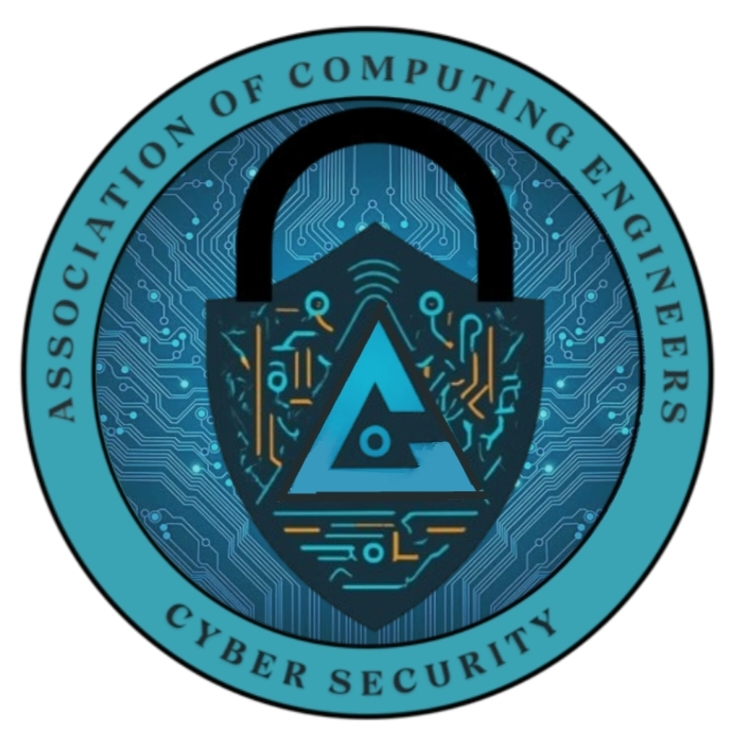
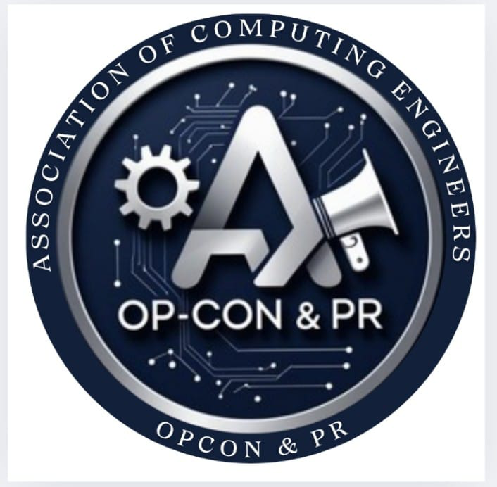

Education
B.Tech Computer Science and Engineering (spl. in Cybersecurity and Blockchain Technology)
SASTRA Deemed University2022-2026
CGPA: 8.0000
Class 12
Samadh Higher Secondary School
May 2022
Percentage: 86.80%
Class 10
Samadh Higher Secondary School
May 2020
Percentage: 85.20%
Cybersecurity Engineer Intern
- Conducted security assessments and vulnerability scans to identify potential risks.
- Deployed and configured the Wazuh security platform to monitor and analyze system activities.
- Integrated Wazuh with the ELK Stack (Elasticsearch, Logstash, Kibana) to visualize security alerts and events
- Developed custom rules and alerts to enhance threat detection capabilities.
- Built a system capable of detectng realtime threats (e.g., unauthorized access, privilege escalations, and system anomalies)
- Created dashboards and alertng mechanisms to ensure immediate notification of suspicious behavior
Volunteering
Member at Association of Computing Engineers (ACE), SASTRA - Cybersecurity
- Organized workshops on cybersecurity awareness and best practices.
- Participated in cybersecurity events and awareness campaigns.
- Contributed to vulnerability assessment tasks during internal workshops.
- Particpated in various Capture The Flag (CTF) competitions.
- Conducted a Capture The Flag (CTF) competition.
Head of Association of Computing Engineers (ACE), SASTRA - Operation Control & PR
- Managed public relations, event logistics, expenses and communications for the association during various events.
- Coordinated Tech Talks, Hackathons and Workshops under various domains.
Projects
Integrated Customized IDS with SIEM
- Developed a custom Intrusion Detection System and integrated it with a Security Information and Event Management (SIEM) tool
- Focused on realtime alerting and analysis for internal traffic
- Tools Used: Snort, Wazuh, ELK Stack
Implementation of Lightweight Cryptography for IoT Environment
- Studied and implemented lightweight cryptographic algorithms for constrained devices
- Evaluated performance on Raspberry Pi and ESP32 platorms
Setup of Personal VPN and Storage Server
- Configured OpenVPN and a self-hosted Nextcloud server for secure data storage and access
- Emphasis on encryption, firewall rules, and access control
Technologies
Network Security Technologies:
- Intrusion Detection Systems (IDS)
- Security Information and Event Management (SIEM)
- Firewalls
- Virtual Private Networks (VPN)
- Cryptography
Interests
- Cybersecurity
- Network Security
- Web Exploitation
- Penetration Testing
- Vulnerability Assessment
- IDS Evasion
- Ethical Hacking
- Capture The Flag (CTF) Competitions
- Server Management